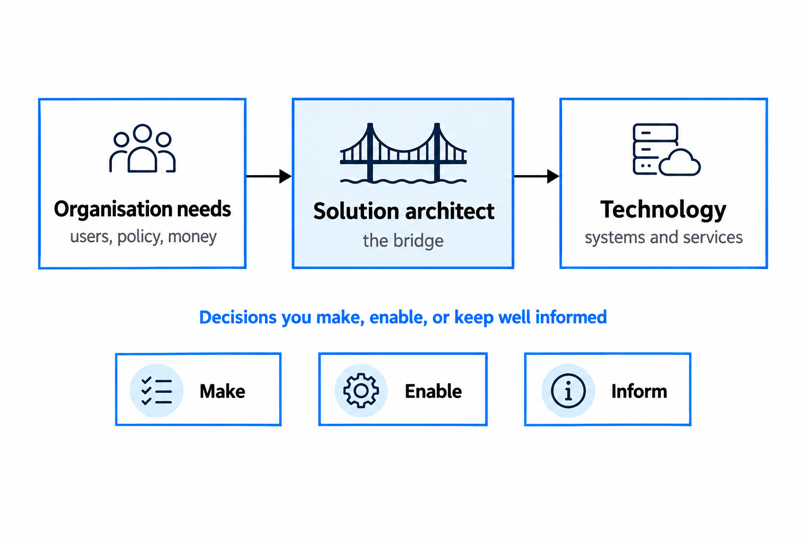
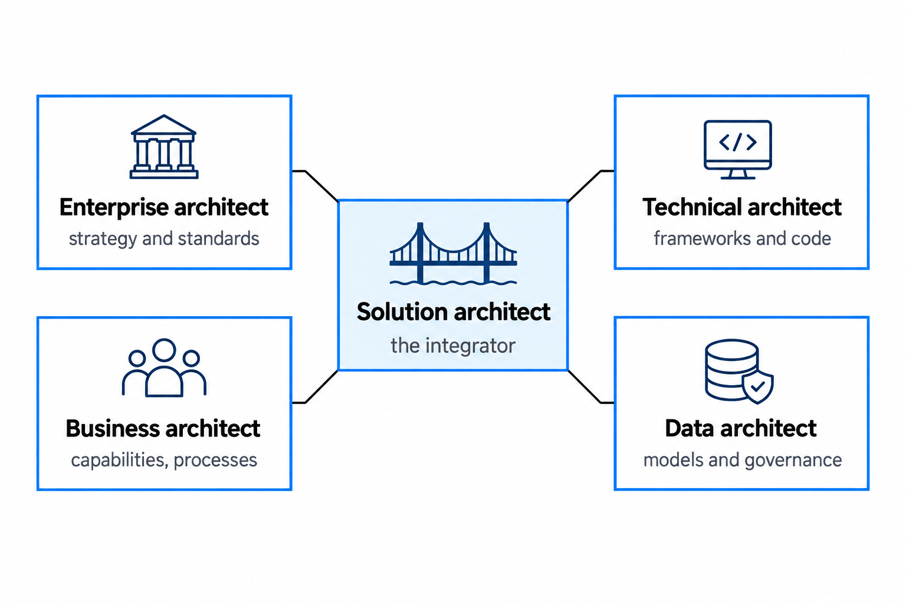
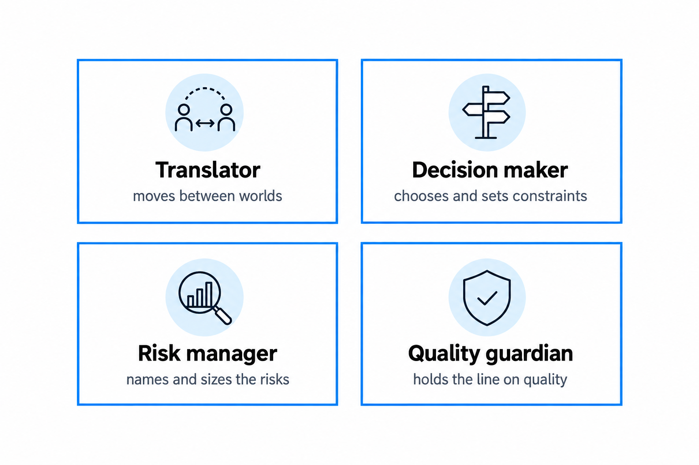

What a Solution Architect actually does
Most people learn the role by doing it, without a clear picture of what it actually demands. This guide gives you the honest, practical version.
You'll come away with:
- A clear picture of what the role involves day-to-day in UK government
- How the Solution Architect differs from Enterprise, Technical, Business and Data Architects
- What "good" looks like in government architecture
- How the Technology Code of Practice and Service Standard shape your decisions
The real role of a Solution Architect
Strip away the padding from the job description and the role comes down to one thing. You make sure a specific solution (a system, a service, or a set of components that have to work together) is technically sound and can actually be built by this organisation, within its constraints. You are the bridge between what the organisation needs and what technology can realistically build. That sounds simple. It is not.

The job shifts with context as much as any role in technology I've worked in. What you do on Monday in a discovery workshop looks nothing like what you do on Thursday in a live service review. A single week might include:
- Running a session with policy colleagues to understand a new regulatory requirement
- Reviewing a proposed API design and pushing back on complexity the team does not need
- Writing an Architecture Decision Record explaining why you chose a managed service over a custom build
- Presenting a solution options paper to a programme board, turning technical trade-offs into business language
- Reading a vendor proposal and spotting the risks they quietly left out
- Sitting in a stand-up to unblock a technical dependency
- Updating the solution architecture document after a change in scope
The thread running through all of it is decisions. You are making them, enabling them, or making sure they are well informed. The significant ones, the choices that are expensive or painful to undo later, are yours to own. In UK government that work carries extra weight. You are spending public money, so every choice has to be justifiable. You sit inside procurement frameworks that limit your options, between policy teams who may not follow the technology and delivery teams who may not follow the policy. And you are expected to meet the Technology Code of Practice and the Service Standard while still shipping something that genuinely works for users.
Architecture is about decisions: which ones to make, and how to make them defensible six months later.
How the role differs from other architecture disciplines
Confusion between architecture roles is common, and in the government teams I've worked in it is worse, because teams are small and one person often wears several of these labels at once. It pays to be precise about who does what.

The enterprise architect works at the level of the whole organisation: strategy, standards, principles, roadmaps. They might decide the department should be cloud first. You work out what that means for one specific service. The technical architect goes deep on implementation. Where you decide an event-driven integration pattern is the right approach, they pick the message broker and tune it. In many government teams that line is blurred, and that is fine, as long as someone owns both the strategic and the tactical view.
The business architect maps capabilities, processes, and how the organisation is structured. You need to understand their work, because you cannot design a sound solution without the business context, but they own the business model and you own the solution design. The data architect owns data models, flows, governance, and quality. In government, where data sharing across departments is both vital and politically charged, their decisions shape what you can and cannot do.
Notice the pattern. You are not the deepest specialist in any one of these areas, and you do not need to be. You are the integrator. Your value is seeing how the strategy, the process, the data, the security, and the implementation fit together, and naming the places where they do not.
The four hats you wear
On any given day you are wearing at least one of four hats, often more than one at the same time. In my experience most architects lean towards one or two of them and quietly neglect the rest.

As translator you move between worlds. Policy talks in outcomes and legislation, delivery in sprints and story points, security in threats and controls, commercial in contracts and service levels, leadership in risk and value. Your job is to get these groups understanding each other well enough to decide together, which means finding the right level of abstraction for each one rather than dumbing anything down.
As decision-maker you choose between options, and every choice you make becomes a constraint on someone else. Good architects make those choices explicit and write them down. Poor architects make them by accident, forget them, and later wonder how the system ended up the way it did.
As risk manager you deal with the fact that every decision carries risk. New technology brings adoption risk, old technology brings obsolescence risk, building brings maintenance risk, buying brings lock-in. You will not eliminate any of it, so the work is to name it, size it where you can, and make sure the right people accept it with their eyes open.
As quality guardian you hold the line on what good enough means. Not as a gatekeeper who blocks everything, which only breeds resentment, but as the person who pushes back when a team wants to cut corners on performance, security and resilience, or when a vendor claims their product does everything, or when delivery pressure turns documentation into a someday job. It takes courage and tact in roughly equal measure.
What good architecture looks like in government
Good architecture in government is not the same animal as good architecture in a startup or a bank. A startup can move fast and break things. You cannot, because the things break on citizens. You are handling people's data and building services they rely on to heat their homes, claim what they are owed, or prove who they are.
So the first quality is that it serves users. The Service Standard exists for a reason. However elegant the technical design, if it does not enable a service that meets a real user need, simply and reliably, it has failed.
The second, and the one I've seen separate experienced government architects from newcomers, is proportionality. Government services run from a single form that collects some data to platforms spanning several departments and moving millions of transactions. Good architecture matches the weight of the solution to the weight of the problem. Building a microservices estate for a service with, say, two hundred users and fifty transactions a day is as much a failure as under-building the critical one.
The rest follows from those two. Good government architecture is honest about its trade-offs and makes sure the right people have accepted them. It works within real constraints rather than wishing them away, and government has plenty: procurement rules, security classifications, accessibility duties, Welsh language obligations, dependencies on other departments, ministerial priorities. It can be operated and evolved by whoever inherits it, because in government people move, contracts end, and the team in two years will not be the team today. And it fits the wider estate, reusing the cross-government building blocks like GOV.UK Notify, GOV.UK Pay and GOV.UK One Login rather than rebuilding them badly.
Good government architecture is proportionate. It matches the weight of the solution to the weight of the problem.
The Technology Code of Practice and Service Standard
Two documents shape how you work more than any others. The Technology Code of Practice sets 13 points that government technology projects are measured against. They run from defining user needs and making things accessible and inclusive, through open source, open standards, Cloud First, security, privacy, reuse, integration and better use of data, to purchasing strategy and sustainability. Point 13 is meeting the Service Standard, which is why the two documents are really one lens rather than two. The Service Standard sets 14 points. If you are building a transactional service in central government you must have it assessed against them, and that applies even when the service is internal and only civil servants will ever use it. Assessments happen at the end of alpha and beta, and each point is now rated red, amber or green rather than met or not met.
Treat neither as policy you read once and file away. They are the lens your work gets judged through at assessment. Choose to build custom instead of reusing a government component and you will need to explain why. Propose hosting it in your own data centre and you will need to justify that against Cloud First. The practical test is simple. For every significant decision you make, you should be able to say how it lines up with the Code of Practice. If you cannot, either the decision is wrong or you have not finished thinking it through.
One caveat on all of this. In July 2026 GDS set out plans to move the Service Standard away from a one-off assessment model towards a "living standard" covering the whole life of a service. The 14 points still apply today, but expect the framing around assessments to change. GDS set out its plans in a blog post on evolving the Service Standard.
Common misconceptions about the role
A few myths trip up new architects, and they are worth naming plainly.
"The architect is just a senior developer who draws diagrams."
Technical depth helps, but the role lives in decision-making, communication, and synthesis. A brilliant coder who cannot explain a choice to a stakeholder from outside the technical team will struggle in the chair.
"The architect designs the solution and hands it over."
Architecture has no end date. The design keeps moving as requirements evolve and as reality intrudes on the plan, and you move with it.
"The architect has the final say on everything technical."
You own the significant, hard-to-reverse decisions. The day-to-day technical calls belong to the team. Try to control all of it and you become the bottleneck everyone routes around.
"Architecture is mostly about choosing technologies."
Technology selection is a small slice of it. The larger part is understanding the problem, setting the approach, and managing the trade-offs so the whole thing holds together.
"You need to know everything."
You do not. You need to know enough to ask the right questions and recognise a good answer when you get one. Beyond that, you need to know when to bring in a specialist. Some of the most credible architects I've worked with are the ones comfortable saying they want the security lead in the room before they commit.
What separates competent from excellent
A competent architect designs a solution that works. An excellent one does a few things beyond that.
They anticipate, asking what happens when this scales before the scaling problem arrives, and what happens when this vendor folds before the contract is signed. They simplify, because anyone can design something complicated and it takes real skill to design something simple that still meets every requirement. They communicate, explaining the same architecture to a minister in two minutes and a developer in two hours, and writing documents people actually read. And they build trust slowly, by being honest about what they know and do not know, admitting when they are wrong, and pushing back firmly but well when they watch a bad decision forming.
Underneath all of it sits one habit. Excellent architects care about outcomes rather than outputs. They do not count the documents they produced or the diagrams they drew. They look at whether the service works for the people using it, whether the team can keep it running, and whether the public got value for the money spent.
This is one practising architect's account of the role in UK central government, not official guidance. Local government and the NHS work differently.
Last reviewed August 2026 against the primary sources below. Government policy changes; check the source before relying on this.